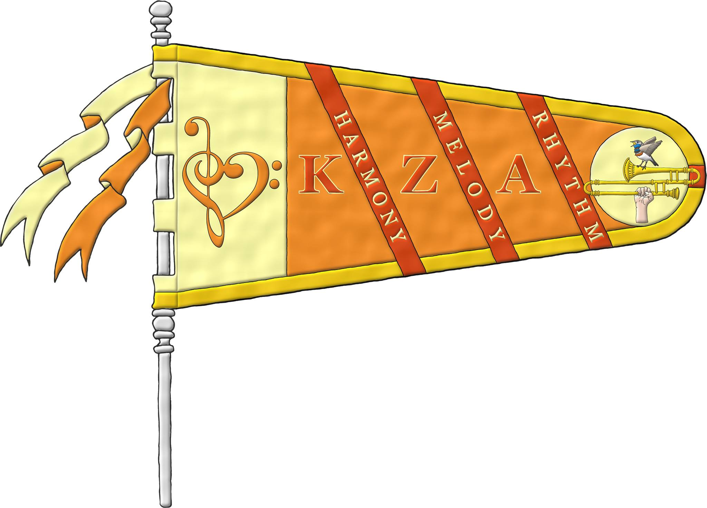

<p><strong>Posted to:</strong> The Google+ Heraldry Community</p>
<p><strong>Posted by:</strong> Laird Sky</p>
<p><strong>Created on:</strong> May 15 2016 at 8:16</p>
<div>My KZA Business arms by Dr. Antonio Salmeron Cabañas.  Blazon- Or, a treble clef inverted and bass clef conjoined in fess tenné.</div>
<div>

</div><div>

</div><div>

</div>